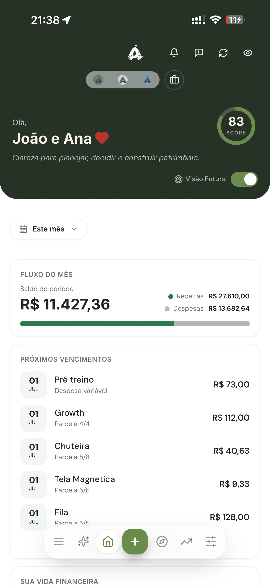

Quando o assunto é dinheiro no relacionamento, o problema raramente é quanto o casal ganha — é o quanto os dois enxergam. Sem transparência e sem um combinado claro, qualquer gasto vira motivo de atrito. A boa notícia: organizar as finanças a dois é mais sobre conversa e método do que sobre planilha. Veja como fazer.
Este guia complementa o nosso guia de planejamento financeiro pessoal, agora aplicado à vida a dois.
Comece pela conversa, não pela planilha
Antes de dividir qualquer conta, os dois precisam colocar as cartas na mesa: quanto cada um ganha, quanto cada um deve, e o que cada um quer para o futuro. Parece óbvio, mas muitos casais nunca tiveram essa conversa de forma completa. Transparência é a base — sem ela, nenhum modelo de divisão funciona.
Aproveite para alinhar objetivos comuns: uma viagem, a entrada de um imóvel, os filhos, a aposentadoria. Quando os dois remam para o mesmo lugar, cada decisão de gasto fica mais fácil.
Os três modelos de divisão de contas
Não existe um modelo certo para todos. Existe o que o casal considera justo e consegue manter. Os três mais comuns:
- Meio a meio: cada um paga 50% das despesas. Simples, mas pode pesar para quem ganha menos.
- Proporcional à renda: quem ganha mais contribui com uma fatia maior. Costuma ser o mais justo quando as rendas são bem diferentes.
- Caixa único: tudo entra em um pote comum e as decisões são conjuntas. Exige muita confiança e alinhamento.
Muitos casais funcionam melhor com um modelo híbrido: uma conta conjunta para as despesas e metas comuns, e contas individuais para os gastos pessoais de cada um. Assim há parceria sem perder a autonomia.
Definam quem cuida do quê
Organização não significa que uma pessoa carrega tudo sozinha. Combinem quem acompanha as contas do mês, quem lança os gastos, quem revisa os objetivos. O ideal é que os dois tenham visão do quadro completo — mesmo que um seja mais "operacional" que o outro. Finança de casal escondida ou concentrada em um só cria dependência e desconfiança.

Revisem juntos, todo mês
Marquem um momento fixo — 20 ou 30 minutos por mês — para olhar as finanças juntos: o que entrou, o que saiu, como estão os objetivos. Não precisa ser tenso; pode ser com um café. Essa rotina transforma dinheiro de "assunto que gera briga" em "projeto que o casal toca junto". A previsibilidade tira o peso emocional das decisões.
Construam a base a dois
Assim como na vida individual, o casal precisa de uma reserva de emergência e de um plano para eventuais dívidas. Decidam juntos o tamanho da reserva do casal e a ordem de prioridade. Enfrentar isso como time, e não como adversários, muda completamente a dinâmica.
Perguntas frequentes
Como dividir as contas?
Meio a meio, proporcional à renda, ou caixa único. O proporcional costuma ser o mais justo quando as rendas diferem. O melhor é o que os dois acham justo e mantêm.
Casal deve juntar todo o dinheiro?
Não necessariamente. O modelo híbrido — conta conjunta para o comum e individuais para o pessoal — funciona bem para muitos casais.
Como evitar brigas por dinheiro?
Transparência e conversa regular. A maioria dos conflitos vem da falta de informação, não da falta de dinheiro.
Organizem o dinheiro juntos
Com o acesso compartilhado do Atlas, os dois enxergam as mesmas finanças e decidem em time.
Testar 7 dias grátis, sem cartãoContinue lendo: Guia de planejamento financeiro · Reserva de emergência
Walter Espíndola
CEO da Zephyr Investimentos, com mais de 10 anos no mercado financeiro gerindo cerca de R$100 milhões em ativos. Criou o Atlas para levar clareza financeira a qualquer pessoa.